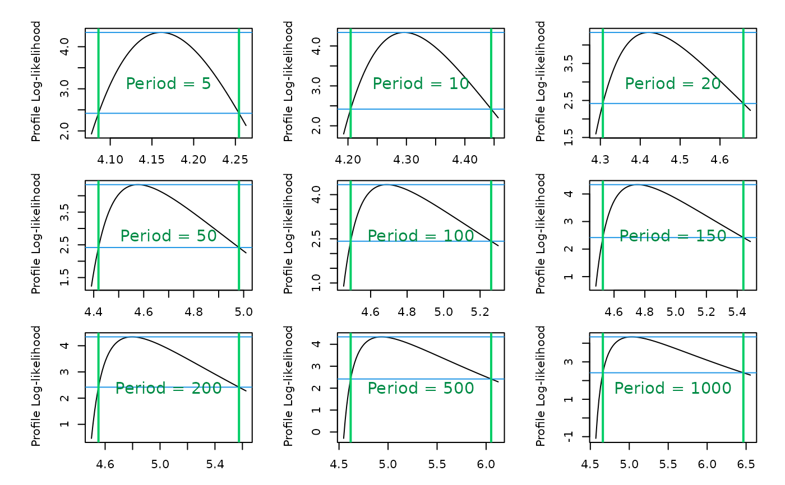

Check the predict method.
check_predict(
object,
ref,
level = 0.95,
which = "confint",
newdate = as.Date("2020-02-01"),
confintMethod = "proflik"
)A TVGEV package.
An object with class "gev.fit" created by the
function gev.fit of the ismev package.
Confidence level.
Not used yet.
See predict.TVGEV.
See predict.TVGEV.
Nothing. For each return period computed by
predict.TVGEV, the plot built by ismev::gev.prof is
shown. Two vertical lines are added, showing
the confidence limits found by predict.TVGEV with
confintMethod = "proflik". Each vertical line should cut
the profiled log-likelihood curve at one of its two intersections
with the horizontal line.
The comparison with the ismev package is only completed for stationary models because it is difficult otherwise to get profile-likelihood confidence intevals on Return Levels.
ismev::gev.prof does not return the confidence limits
which must be evaluated by eye from the displayed graph.
data(portpirie)
df <- portpirie
df <- within(df, date <- as.Date(sprintf("%4d-01-01", Year)))
fitNSGEV <- try(TVGEV(data = df,
response = "SeaLevel", date = "date"))
fitismev <- gev.fit(xdat = df$SeaLev)
#> $conv
#> [1] 0
#>
#> $nllh
#> [1] -4.339058
#>
#> $mle
#> [1] 3.87474692 0.19804120 -0.05008773
#>
#> $se
#> [1] 0.02793211 0.02024610 0.09825633
#>
check_predict(fitNSGEV, ref = fitismev)
#>
#> o Finding CI for Return Levels
#>
#> **************
#> Lower bounds
#> **************
#>
#> Confidence Level: 0.95
#>
#> o Date: 2020-02-01
#>
#> - Period: 1000
#> Optimisation status: 3
#> Iterations: 27
#> Objective: 4.66
#> Constraint check -0.0000028
#> Gradient directions: 0.0011
#>
#> - Period: 500
#> Optimisation status: 3
#> Iterations: 14
#> Objective: 4.62
#> Constraint check -0.0000055
#> Gradient directions: 0.0014
#>
#> - Period: 200
#> Optimisation status: 3
#> Iterations: 13
#> Objective: 4.55
#> Constraint check -0.0000040
#> Gradient directions: 0.0050
#>
#> - Period: 150
#> Optimisation status: 3
#> Iterations: 13
#> Objective: 4.53
#> Constraint check -0.0000070
#> Gradient directions: 0.0022
#>
#> - Period: 100
#> Optimisation status: 3
#> Iterations: 13
#> Objective: 4.49
#> Constraint check -0.0000048
#> Gradient directions: 0.0032
#>
#> - Period: 50
#> Optimisation status: 3
#> Iterations: 15
#> Objective: 4.42
#> Constraint check -0.0000375
#> Gradient directions: 0.0010
#>
#> - Period: 20
#> Optimisation status: 3
#> Iterations: 17
#> Objective: 4.31
#> Constraint check -0.0000627
#> Gradient directions: 0.0093
#>
#> - Period: 10
#> Optimisation status: 3
#> Iterations: 18
#> Objective: 4.20
#> Constraint check -0.0000082
#> Gradient directions: 0.0014
#>
#> - Period: 5
#> Optimisation status: 3
#> Iterations: 17
#> Objective: 4.09
#> Constraint check -0.0000652
#> Gradient directions: 0.0030
#>
#> **************
#> Upper bounds
#> **************
#>
#> Confidence Level: 0.95
#>
#> o Date: 2020-02-01
#>
#> - Period: 1000
#> Optimisation status: 3
#> Iterations: 36
#> Objective: -6.47
#> Constraint check -0.0000006
#> Gradient directions: 0.0082
#>
#> - Period: 500
#> Optimisation status: 3
#> Iterations: 11
#> Objective: -6.05
#> Constraint check -0.0000064
#> Gradient directions: 0.0124
#>
#> - Period: 200
#> Optimisation status: 3
#> Iterations: 14
#> Objective: -5.57
#> Constraint check -0.0000002
#> Gradient directions: 0.0032
#>
#> - Period: 150
#> Optimisation status: 3
#> Iterations: 9
#> Objective: -5.44
#> Constraint check -0.0000052
#> Gradient directions: 0.0055
#>
#> - Period: 100
#> Optimisation status: 3
#> Iterations: 11
#> Objective: -5.26
#> Constraint check -0.0000016
#> Gradient directions: 0.0035
#>
#> - Period: 50
#> Optimisation status: 3
#> Iterations: 14
#> Objective: -4.98
#> Constraint check -0.0000009
#> Gradient directions: 0.0059
#>
#> - Period: 20
#> Optimisation status: 3
#> Iterations: 15
#> Objective: -4.66
#> Constraint check -0.0000354
#> Gradient directions: 0.0025
#>
#> - Period: 10
#> Optimisation status: 3
#> Iterations: 20
#> Objective: -4.44
#> Constraint check -0.0000491
#> Gradient directions: 0.0289
#>
#> - Period: 5
#> Optimisation status: 3
#> Iterations: 25
#> Objective: -4.25
#> Constraint check -0.0000007
#> Gradient directions: 0.0037
#> If routine fails, try changing plotting interval
#> If routine fails, try changing plotting interval
#> If routine fails, try changing plotting interval
#> If routine fails, try changing plotting interval
#> If routine fails, try changing plotting interval
#> If routine fails, try changing plotting interval
#> If routine fails, try changing plotting interval
#> If routine fails, try changing plotting interval
#> If routine fails, try changing plotting interval
